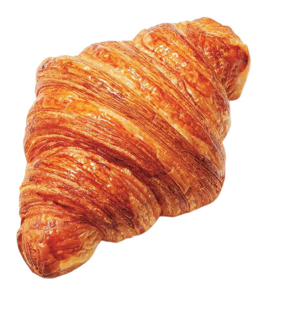
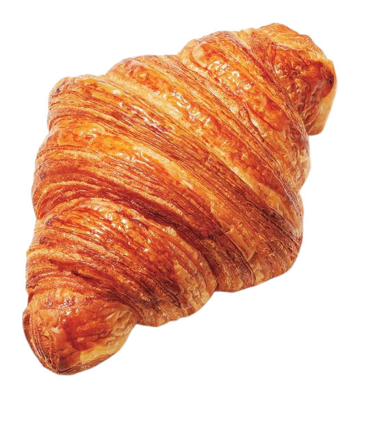

Pick A Dish!
Observe today's in-flight dining options!
 

"Which came first — food, or culture? Every bite of food tells a unique story about a particular culture. Yet, every culture expresses itself and its beliefs through food. Food is a medium to express who you are, and provide an opportunity for someone to step into your world for just a second." - Kenzie Osborne